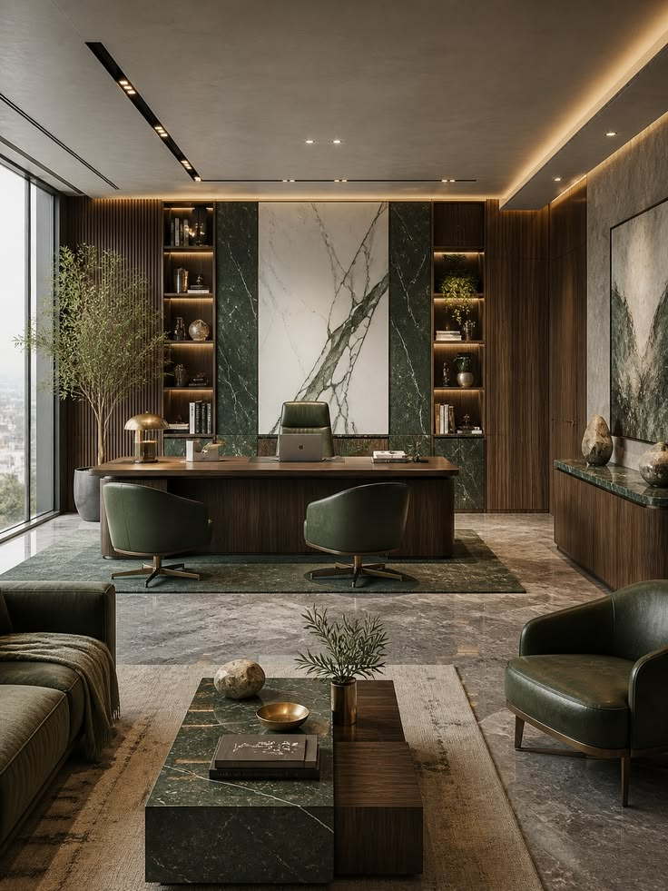

Our Story
ESTABLISHED IN 2024Founded in 2024, Olive & Oak was born out of a shared passion to redefine contemporary spaces across South Africa. We saw an opportunity to bridge the gap between minimalist modern aesthetics and the comforting warmth of natural, organic elements.
What started as a boutique design studio quickly expanded across Pretoria, Johannesburg, Cape Town, Durban, and Polokwane. From serene residential sanctuaries like The Langford Loft to landmark biophilic corporate spaces like The Green Quarter, our journey is rooted in creating environments that breathe life, light, and harmony into daily living.